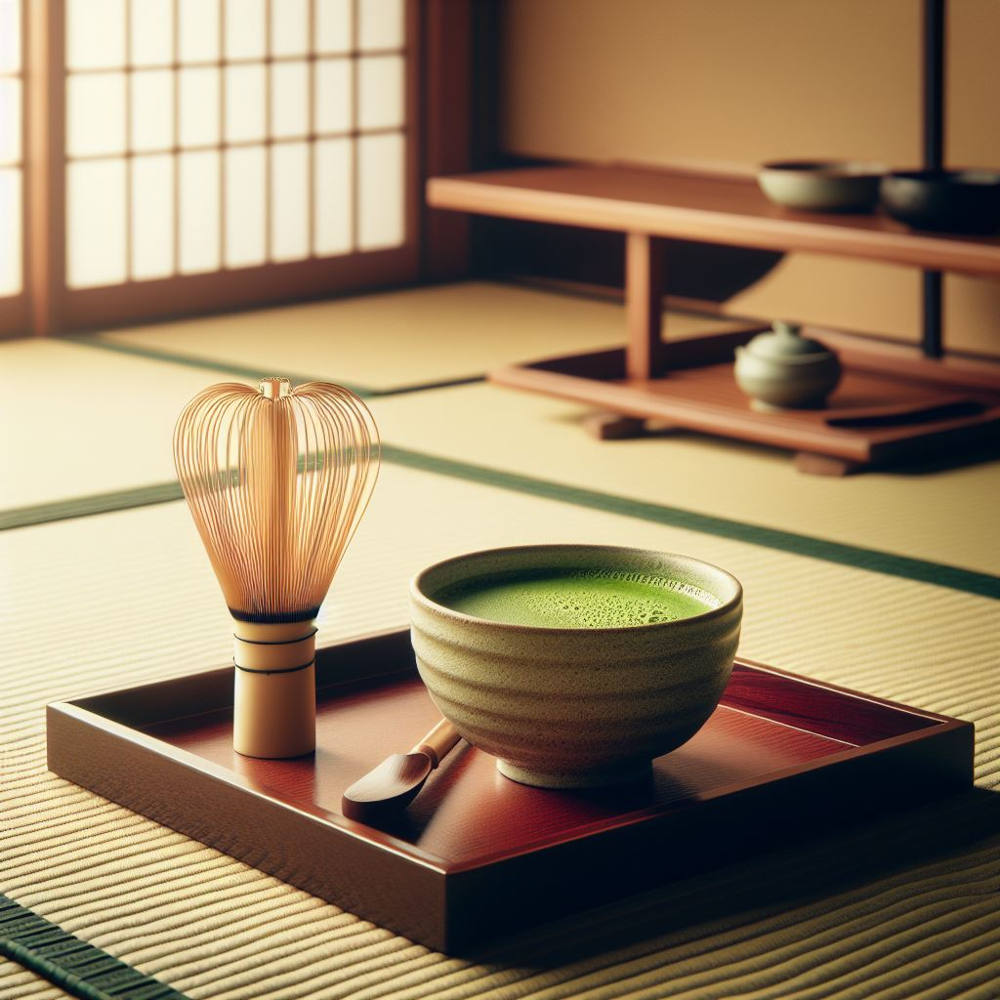

Histoire du Thé Matcha
Son nom est dérivé de mocha en chinois mandarin qui signifie littéralement "thé en poudre".
L’histoire du thé Matcha remonte au IXe siècle, lorsque le thé en poudre à été introduit au Japon par des moines bouddhistes chinois désireux d’exporter le thé en poudre qui était connu jusqu’ici qu’en Chine, mais c’est au XIIe siècle que le thé matcha à été introduit par le moine Zen Essai en les plantant dans le jardin du temple bouddhiste à Kyoto, ce serait lui qui aurait été la première personne à les moudre et ensuite à les consommer en tant que thé.
C’est d’ailleurs cette fameuse poudre verte qui aurait donné naissance à la cérémonie du thé japonais. C’est au Japon, que le thé matcha a été perfectionné car ce sont les japonais qui ont développé leurs propres techniques et préférences.

Aventure du Thé Matcha
L'aventure du thé Matcha débute dans les collines verdoyantes d'Uji, au Japon, où les cultivateurs perpétuent des techniques ancestrales pour produire le meilleur Matcha au monde. Chaque feuille est cueillie à la main avec délicatesse, puis séchée et broyée pour obtenir une poudre fine et veloutée.
Le rituel de préparation dans les maisons de thé japonaises, où le Matcha est fouetté jusqu'à former une mousse onctueuse, représente une expérience à part entière. En savourant une tasse de thé Matcha, on plonge dans une tradition séculaire, où simplicité et élégance se marient pour offrir une expérience sensorielle inoubliable, révélant ainsi toute la richesse de la culture japonaise.
Description de Matcha Tea
À Propos de Matcha Tea
Chez Matcha Tea, nous croyons que chaque personne se doit de goûter au plaisir de cette
petite merveille en provenance du Japon. Le thé matcha est considéré comme un
superaliment. Cette poudre d’un vert électrique, est riche en bons nutriments et
particulièrement en antioxydants et vitamines A, C et E. Nous sommes une entreprise
passionnée et spécialisée dans la confection de délicieux thés matcha. Que ce soit le goût
naturel du matcha en passant par le matcha goût vanille ou encore celui à la fraise, notre
entreprise locale travaille à confectionner sur mesure ses petites merveilles.
Notre Engagement
Matcha Tea ne fait aucune concession sur la qualité et l’origine de son thé matcha. Chaque
étape de production est exclusivement réalisée au Japon : le matcha, les arômes et le
conditionnement. Chaque production est testée qui garantit une absence totale de présence
de pesticides dans nos produits.
Pourquoi choisir le thé matcha ?
De façon non exhaustive, voici quelques-unes des propriétés du thé matcha :
- Grâce à la théanine qu’il contient, il apporte une énergie douce et constitue une bonne alternative au café.
- Il est antistress et relaxant. Ce n’est d’ailleurs pas pour rien que les moines bouddhistes zen consomment du thé matcha depuis des siècles pour leurs méditations !
- Il aide à la régulation de la glycémie et du microbiote intestinal.
- Il améliore le système immunitaire grâce notamment aux antioxydants et vitamines qu’il contient.
- Il accroît les performances sportives et aide l’organisme à récupérer après l’effort. Ceci est principalement dû à la haute teneur en antioxydants qui favorisent l’oxygénation des muscles. Il permet également de réguler la production d’acide lactique, responsable des crampes musculaires.
Nos services :
1 - Vente de matcha : Matcha Tea offre un service de vente de matcha de qualité nature ou
parfumé. Que ce soit une occasion pour déguster seul ou en groupe notre thé matcha, notre
équipe vous offre le meilleur du thé matcha venu directement d’une petite entreprise au
Japon.
2 - Vente d’accessoires matcha : Notre équipe vous offre des accessoires de qualité pour
perfectionner votre thé matcha et en faire comme des professionnels.
Nos valeurs
Au sein de notre entreprise Matcha Tea, nous tenons à cœur à respecter les valeurs ancestrales japonaises liées au thé matcha, c’est pourquoi toutes nos feuilles de thé vert sont issus du Tencha qui demeurent le plus haut en qualité. Nous prenons soin de cultiver les plus belles feuilles de thé vert qui sont cultivées pour les moudre, notamment grâce à leur grade Cérémonie qui est le plus haut grade en terme de qualité pour le Matcha.
Afin de bénéficier d’une expérience gustative unique composé de saveurs uniques, veloutée et sucrée, avec en prime un umami puissant qui signifie en japonais “savoureux”, la 5e saveur de base avec le salé, le sucré, l’amer et l’acide car chez les nippons, l’umami est un signe d’une qualité absolue.